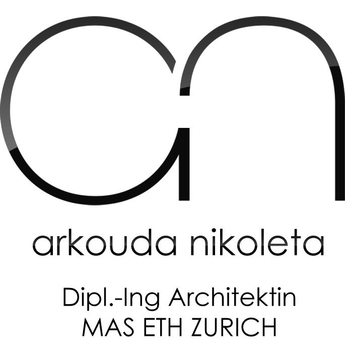

- Departement Architektur D-ARCH: Studienleitung Prof. Marc Angelil, Hehl Rainer.
- Bildungsreise nach Brasilien, Sao Paulo und Rio de Janeiro: Stüdie über Favellas.

Nikoleta Arkouda
Persönliche Informationen
- Adresse: Hagenholzstrasse 62, 8050 Zürich
- E-mail Adresse: nikoleta.arch@gmail.com
- Geburtsdatum: 10.06.1987
- Staatsbürgerschaft: Griechische
- Telefonnumer: 0762964864
- Ausländerausweiss: B, gültig bis 2020
Ausbildung
2012 - 2013 ETH Zürich, D-ARCH: Master of Advanced Studies (MAS) in Urban Design
2005 - 2011 Aristotle Universität Thessaloniki (AUTH) Griechenland: Architekturdiplom
- Departement Architektur, Diplomarbeits: “Urban-Rural Transition - Elia Redesign”, Diplomarbeitsnote 9.63/10.
- Bildungsreise nach Manhattan, New York und Philadelphia: Stüdie über Gebäude Umgebung
Berufserfahrung
Jun 2016 - Jetzt
Freiberüfliche Architektin
Aufgabe: Umbauen EFH, Wettbewerbe
Aug 2015 - Mai 2016
Mitglied des Teams von Archstudio Architekten AG in Zürich
Aufgabe: Teilnahme an Wettbewerbe, Einfamilienhäuser Design, Mehrfamilienhäuser Design, (Baueingabe-Abänderungseingabe-Revisionspläne), Innenarchitektur, Visualisierungen
Jan 2014 - Jun 2015
Mitarbeiterin Architektin an dem Architektur Studio "Gagos Architectural Construction and Design", Griechenland
Aufgabe: Entwurf Architektur und Innenarchitektur, Mehrfamilienhäuser und Einfamilienhäuser, Retail, Restaurants, Umbauen und Anbauen.
2011 - 2012
Architektin Praktikantin an dem Architektur Studio "Vaios Zisopoulos", Griechenland
Aufgabe: Beobachtung der Konstruktion von Gebäuden / Teilnahme an Architekturzeichnungen
2010
Assistentin an der Dockor-Arbeit von Prof. A. Antoniou, Lektor an der Aristoteles Universität in Thessaloniki
Thema des Buches: Stüdie über historische Schulgebäude
Berüfliche Kenntnise
Computerkenntnise
Graphishoft Archicad • Artlantis Studio • Autodesk Autocad • Autodesk 3D studio Max • V-ray • Adobe Photoshop • Adobe Indesign • Adobe Illustrator • Microsoft Office
30 stündingen Seminar in 2-dimensionalem Design am Computer mit Gebrauch von Autodesk AutoCAD program
42 stündingen Seminar in 2-dimensionalem Design am Computer mit Gebrauch Graphisoft Archicad Zertificat
50 stündingen Seminar in 2-dimensionalem Design am Computer mit Gebrauch 3D Studio Max program Zertifikat
Projekte
Architekturdesign • Grosse und kleine Anlagen (Häuser, Schulen, Hotel) • Konstruktionstechnologie • Landschaftsdesign • Städtedesign • Industrieldesign • Restauration von historischen Gebäuden • Kunstprojekte • Theoretische Untersutchungen von Schulprojekten von berümten Architekten • Architekturgeschichte • Studien in Architekturgeschichte • Kenntnisse in Statik der Gebaude
Sprachekenntnisse
Deutsch: Sehr gute, Sprachniveau C1
Englisch: Ausgezeichnete (Zertifikat Michigan Proficiency, Zertifikat Cambridge lower) / Zertifikat IELTS 2012
Französisch: Sehr gute Kenntnisse (Zertifikat Delf 1)
Griechisch: Muttersprache
Ausstellungen & Workshops
July 2014
3rd Network of Excellence in InterNet Science (EINS), International Sommer Schule: From Smart Cities to Engaged Citizens
Oktober 2013
Groupenausstellung in der MOMA Uneven Growth : "Tactical Urbanisms for Expanding Mega-cities Launch" event
2013
Groupenausstellung in Swissnex Brazil, Brazil
July 2013
Teilnahme an der Ausstellung von X-Studio, an der 10th São Paulo Architecture Biennale: "City: ways of making, ways of using" at Museu da Casa Brasileira.
July 2013
Teilnahme an der Ausstellung von Studio X-Rio von GSAPP Columbia in Rio de Janeiro, Brazil
September 2012
Workshop in Rio de Janeiro, an der Columbia's University X-Studio
Veröffentlichungen
September 2014
Retail Design Blog: veröffentlichung von "98Bar by Gagos Interior Architectural Design" Project
2014
"Minha Casa, Nossa Cidade: Innovating Mass Housing for Social Change in Brazil", ETH Book, Ruby Press, Berlin
ISBN 978-3-944074-09-2
2014
Archdaily.com: "Minha Casa, Nossa Cidade: Brazil’s Social Housing Policy & The Failures of the Private-Public System"
Marz 2013
"APB - Arquitetura Popular Brasileira", Ruby Press
2011
"Aspects of Eclectisism" AUTH Press
Dissertation, Prof. A.Antoniou